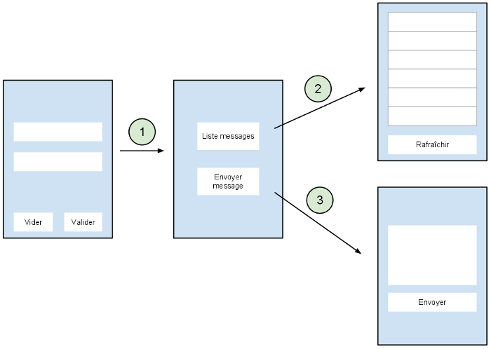

Le projet de développement est dans la continuité de l'application formulaire qui a été développée durant la formation. L'application de ce projet devra s'articuler de la manière suivante :
Concrètement, vous allez devoir implémenter les choses suivantes:
Remarque La partie tricky du projet est l'implémentation de la liste des messages. Je ne vous ai pas parlé du composant permettant l'affichage d'une liste. C'est cette partie qui va représenter le gros du travail. Vous trouverez des indications à la fin de ce document.
Le web service est hébergé sur Heroku à l'adresse http://training.loicortola.com/parlez-vous-android/. L'url racine vous permet d'enregistrer un nouvel utilisateur.
Voici la liste des urls que vous allez devoir utiliser :
true si elle existe, false sinon.[{"uuid":"d94917c5-ae04-469b-a2cc-235ca3c4f85b","login":"un-pseudo","message":"un-message"},{ Vous devrez parsser se json. Le plus simple etant d'utiliser Gson https://sites.google.com/site/gson/gson-user-guide Pour chacune des requêtes, si la combinaison user/password est erronée, la requête n'aboutira pas et vous recevrez le message: access denied
Je ne vous donne pas plus d'indications à ce sujet. N'hésitez pas a vous rendre sur http://developer.android.com/index.html.
Voici quelques ressources bien utiles :
Vous pouvez envoyer le projet à l'adresse suivante : nfavier@excilys.com.
Le fichier envoyé devra être un zip contenant le dossier racine de votre project (celui contenant les sous-dossiers res et src) Et un APK signé en release de votre application. Nommez votre fichier zip de la manière suivante ( un projet par personne):
ParlezVousAndroid_FirstName-LASTNAME.zip
Exemple:
ParlezVousAndroid_Nicolas-Favier.zip
J'accorderai une grande importance sur la propreté du code: Les ressources sont regroupées dans les fichiers correspondants : les String dans strings.xml.... (http://developer.android.com/guide/topics/resources/providing-resources.html) Au sujet des dimensions : Les paddings/margins et éventuellement les tailles des éléments sont en dp (densité de pixel), les textes sont en sp. Concernant le placement des éléments réfléchissez bien au layout le plus pertinent (LinearLayout ou RelativeLayout ?) qui s'appliquerait dans chaque cas précis. N'utilisez pas le mode graphique pour créer vos views. Pour tester si deux textes sont les mêmes, boolean sameTexts = myString.equals(myOtherString);, pour tester si deux entiers sont les memes, boolean sameInt = myFirstInt==mySecondInt;
Documentez-vous sur les conventions de nommage Java : http://java.about.com/od/javasyntax/a/nameconventions.htm (le nom des classes prennent une majuscule (ex MainActivity), le nom des variables ne commencent pas pas une majuscule mais on utilise les majuscules pour séparer les mots (ex maSuperVariable). Les variables ont un nom coherant pas de: b1, string, button...
/!\ Je dois retrouver dans l'application tout ce qui est dans le sujet, y compris ce que l'on a vu dans la semaineFaites des recherches et mettez en place un maximum de features supplémentaires
Je vous demande de m'envoyer par mail (nfavier@excilys.com)les sources du projet avant le mercredi 14 octobre, 23h59. Tout retard équivaux a un zéro. Il faut par ailleurs m'envoyer une application qui fonctionne. N'hésitez pas a tout désinstaller et réinstaller pour vérifier si l'appli ne plante pas au premier démarrage.
Veillez a ajouter un fichier README.txt (ou README.md pour ceux qui connaissent) dans lequel vous indiquerez ce que vous avez réussi a faire, les fonctionnalités implémentées et tout autre réalisations annexes (astuces pour accéder a votre SurfaceView, des pages cachées etc....).
Si vous avez des questions, vous pouvez m'envoyer un email. J'essaierais d'être réactif.
http://training.loicortola.com/chat-rest/1.0